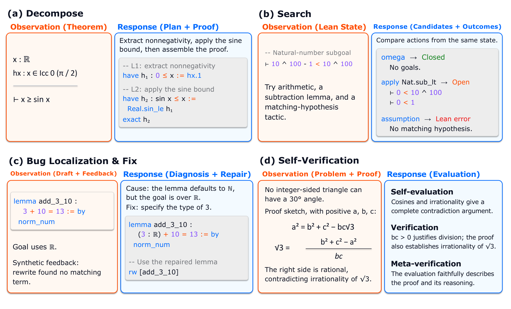
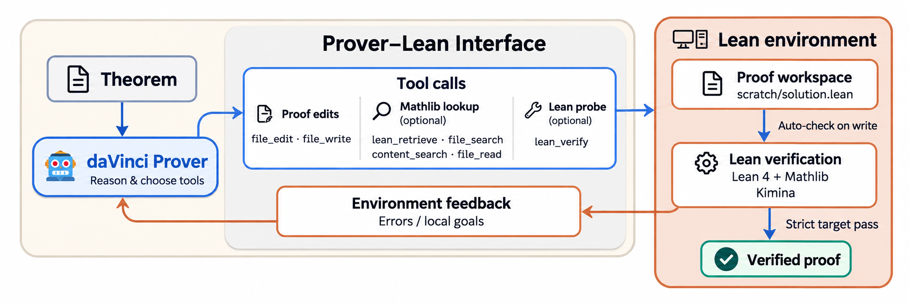
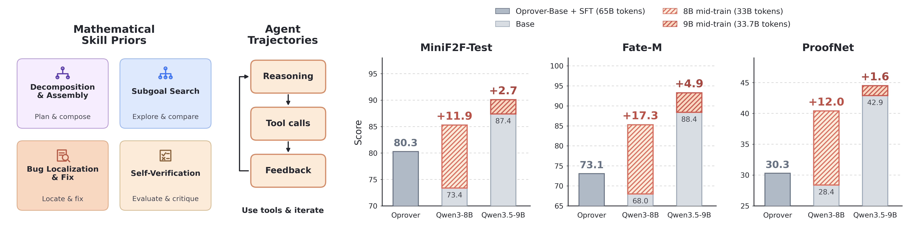

Trains LLM provers through mid-training and SFT on Lean agent trajectories, using a harness with Lean verification and Mathlib retrieval tools, evaluated on Lean 4 benchmarks.
Abstract
Advances in large language models (LLMs) are rapidly transforming formal theorem proving. Yet further progress remains constrained by the lack of a transparent and effective data recipe for systematically improving theorem-proving models. In this work, we argue that effective agentic provers require strong mathematical skill priors to ground theorem proving and agentic trajectories to enable long-horizon, interactive proof construction. To this end, we synthesize an agent-native 33.7B-token mid-training corpus covering decomposition, search, self-verification, and revision, together with verifier-grounded agentic trajectories. We further introduce the daVinci-Prover harness, which enables models to construct proofs and interact with a Lean verifier in an isolated workspace, and use it to collect approximately 36K high-quality agent trajectories for supervised fine-tuning. Our mid-training recipe yields an average improvement of 13.7 points over the matched Qwen3-8B SFT-only baseline across MiniF2F, FATE-M, and ProofNet. When applied to the Qwen3.5 series, our approach also yields strong performance across theorem-proving benchmarks and achieves near-saturating MiniF2F performance with memory compaction. The results highlight agent-native mid-training as an effective foundation for developing stronger interactive theorem-proving agents.
Problem
Agentic LLM theorem provers lack a transparent, effective data recipe. Existing formal corpora are dominated by whole-proof trajectories and rarely expose decomposition, search, self-verification and revision behaviors.
Approach
The authors synthesize a 33.7B-token agent-native mid-training corpus. It combines Lean skill-prior data (decomposition/assembly, verified tactic search, revision, self-verification) with environment-native agent trajectories. A SWE-agent-style harness gives models a workspace with file tools, Mathlib retrieval and a Lean verifier, and is used to collect about 36K trajectories for SFT. Qwen3.5-9B and Qwen3.5-35B-A3B base models are mid-trained, then fine-tuned.

Figure 2: Overview of our midtrain data generation pipeline.

Figure 3: daVinci-Prover agent harness
Results
Mid-training improves results by an average of 13.7 points over a matched Qwen3-8B SFT-only baseline across MiniF2F, FATE-M and ProofNet. Mid-trained Qwen3.5 models outperform base+SFT counterparts on MiniF2F, ProofNet, PutnamBench and other benchmarks. With memory compaction, MiniF2F reaches 97.1%.

Figure 1: Mid-training data design and benchmark performance. Left: The mid-training data incorporates mathematical skill priors and iterative agent trajectories. Right: Mid-training leads to consistent performance gains on benchmarks across different model families.